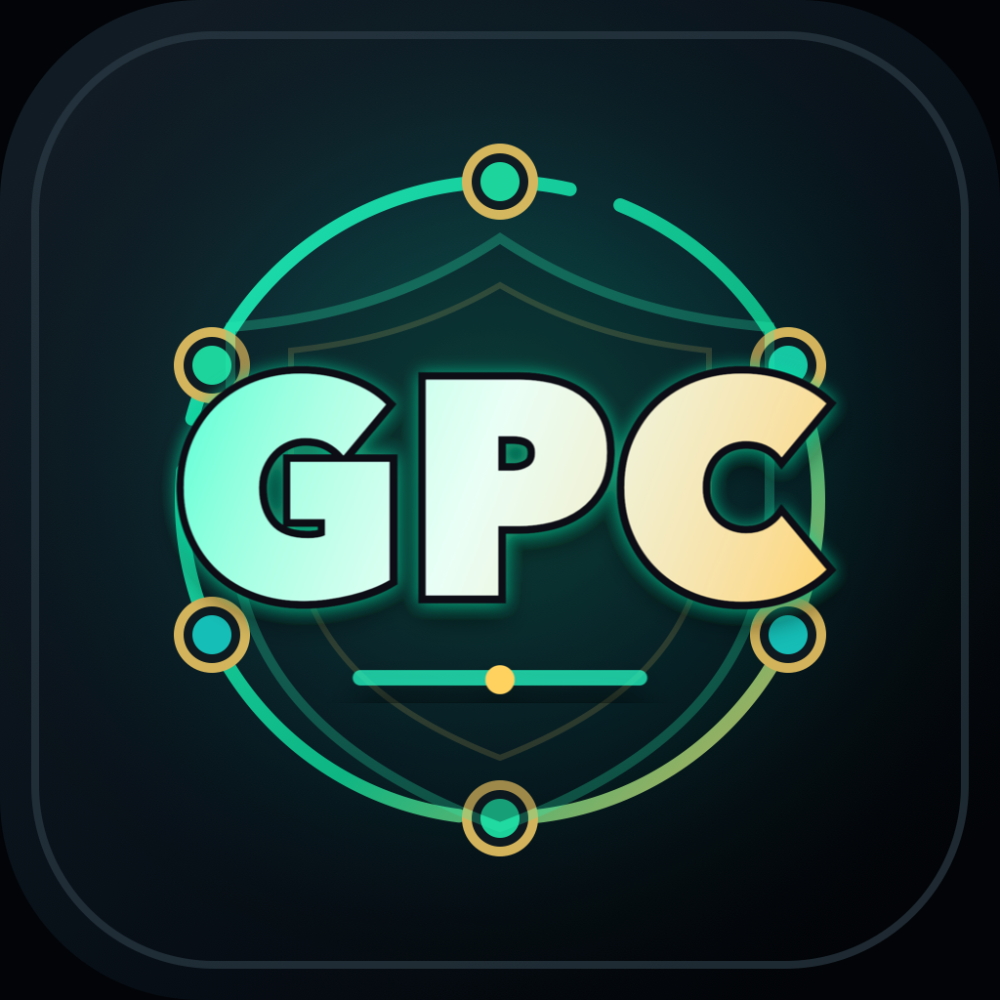
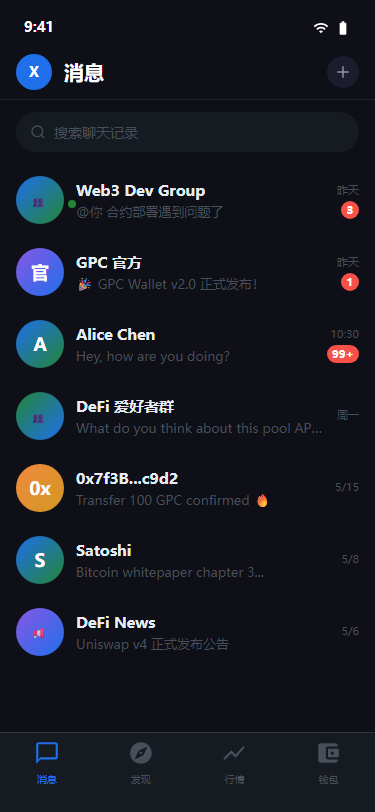
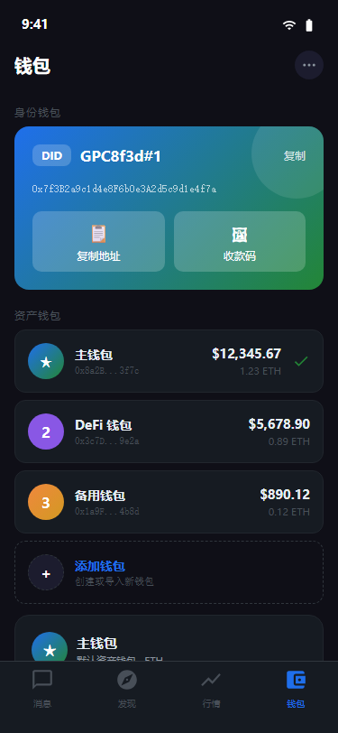
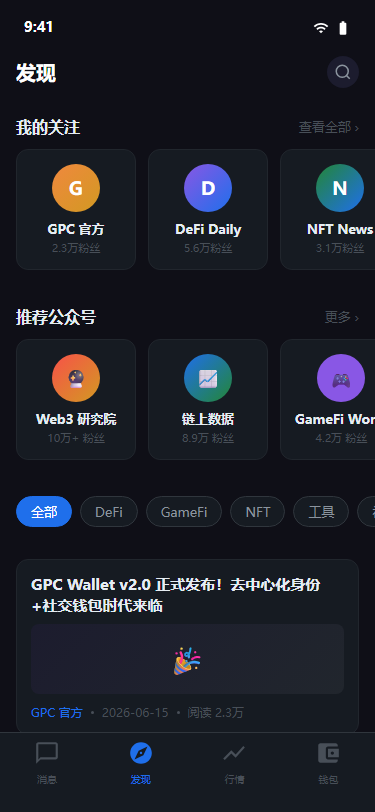
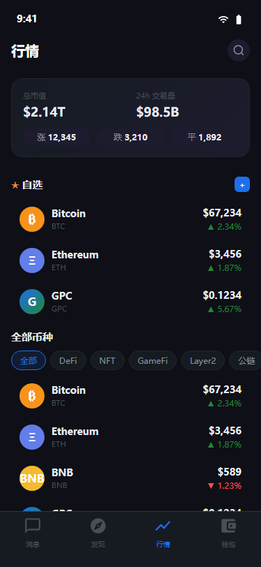

01
身份钱包
打开 App 即拥有可签名的身份入口。聊天、收付和链上操作使用一致的身份语义。

GPC APPGPC APP · WALLET × IDENTITY × NETWORK
GPC App 把自主身份钱包、加密社交、数字资产与可验证的服务节点放进同一个入口。私钥留在你的设备里，关键动作由你确认。


01 / THE APP
资产、关系与服务权限由同一个自主身份衔接，减少重复注册，也不把私钥交给平台。
01
打开 App 即拥有可签名的身份入口。聊天、收付和链上操作使用一致的身份语义。
02
私聊、群聊与公众号消息使用设备签名，并支持端到端加密。
03
身份钱包与独立资产钱包并存，覆盖收发 Token、行情与交易确认。
04
直播、会议与互动内容由可观测的服务节点承载。
05
在同一产品里关注信息源、浏览数字资产市场，再回到可信身份完成互动。
真实 App 界面展示：消息、发现、行情和身份钱包。


02 / SERVICE NETWORK
节点承担音视频、TURN、消息、静态媒体与房间控制服务；质押本金和奖励会计由 BSC 合约管理。
当前参数
影子期后，节点奖励权重按 80% 基础设施表现与 20% 奖励活跃度组合。
边界说明当前节点是 GPC App 的服务基础设施，不是区块链共识验证节点，也不代表 GPC Chain 已上线。
03 / SECURITY MODEL
GPC App 将身份、设备与链上操作拆分校验。服务节点提供能力，但不能替用户签署资产交易。
身份私钥和节点钱包私钥不进入主 API；敏感操作要求本地授权。
设备密钥签署请求和消息，私密内容面向授权设备加密。
在线率、健康度、活动证据与日结报告可追踪，异常进入明确的资格和处罚流程。
本金、奖励与已结算负债分账记录，合约余额必须覆盖记账责任。
GPC APP 2.0.194